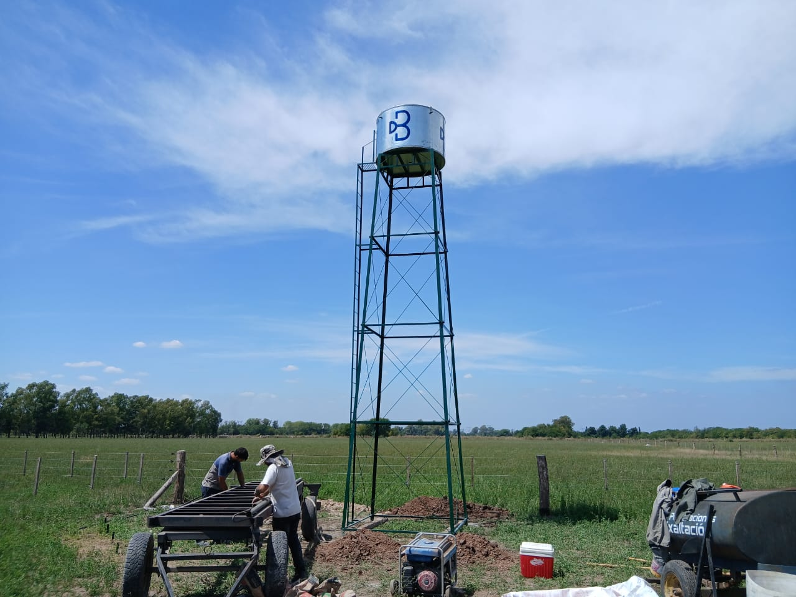

Estructuras metálicas a medida
Torres para tanques y venta de tanques
Torres diseñadas en hierro ángulo con tensores adaptados a la medida. Incluyen escalera con descanso, ideales para uso doméstico o rural. En caso de requerir o quitar algún accesorio, solicitar la modificación en el presupuesto.